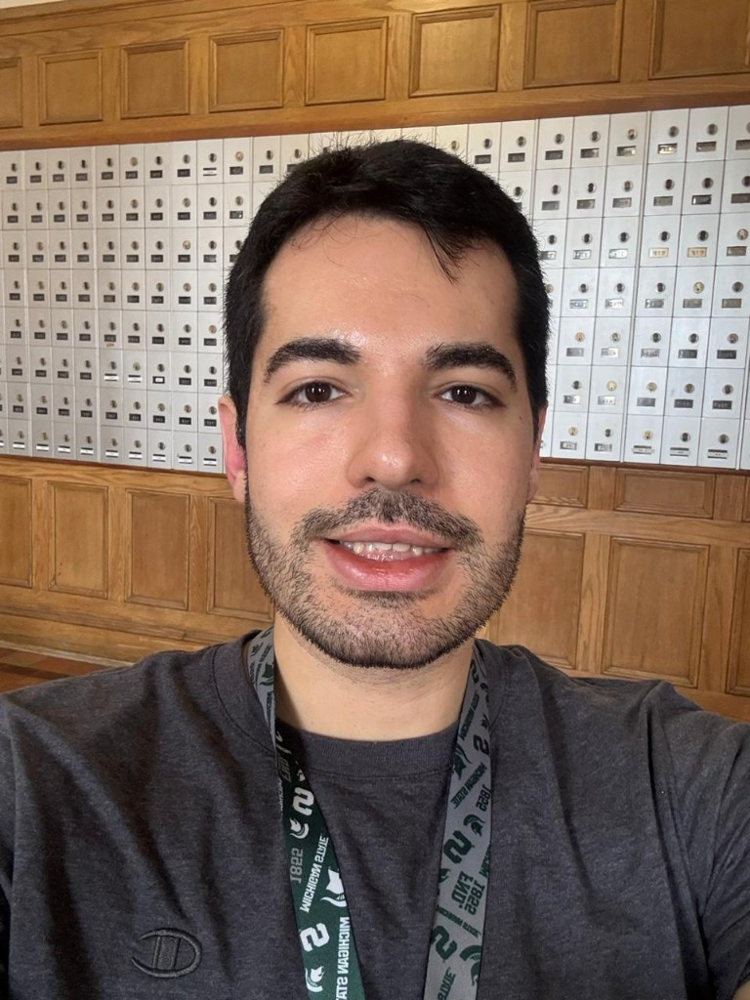

Leandro Sena ZuzaFull Stack Software Developer Github: github.com/leandrosenazuza Phone: +55 34 99238-3934 Email: leandrosenazuza@gmail.com Linkedin: /in/leandrosenazuza |
 |
Profile: Full-Stack Software Developer specializing in new features, legacy modernization, and AI-driven automation (Agentic AI). Experienced refactoring Java/JSF to Spring Boot and migrating .NET Framework to .NET Core. Stack: Java/Kotlin (Spring Boot), C# (.NET), Angular, React, JSF. Master's in Electrical Engineering; fluent in English. Projects: GitHub | Personal page
Software Consultant | 09/2025 – Present
Software consultancy — allocated as consultant across different clients.
Backend Software Developer (Java/Kotlin) | 12/2023 – 08/2025
Outsourcing for Pagbank (30M+ clients) on the DataHub Open Finance project (BACEN compliance).
Tech: Java/Kotlin (8–21), Python, Spring Boot, Hexagonal microservices, Oracle/Flyway, Redis, AWS, PagCloud, K8s, TDD, Grafana
Full Stack Software Developer (Java/Angular) | 12/2022 – 08/2024
Consultancy (Fortaleza-CE). Main project: Delegacia Virtual for SESP-MT — full-stack refactor of the state incident report system.
Tech: Spring Boot (Java 11), Angular, JBoss/JSP, Oracle, SOAP/REST, ArcGIS, Azure, Docker, TDD
Backend Software Developer (Java) | 04/2022 – 12/2022
Outsourcing for BTG Pactual. RTB project: BFF API for individual account onboarding (microservices on AWS/K8s).
Tech: Java 7/11, Spring Boot, Microservices, AWS (EC2, ECS, K8s), Oracle, MongoDB, SOAP/REST, Docker
Full Stack Software Developer (Java) | 09/2020 – 04/2022
ERP for Brazilian agribusiness (production, expenses, invoicing, fiscal compliance). Pair with CTO; BA-driven backlog.
Tech: Java 11, Spring Boot, Angular, SOAP/REST, AWS, PostgreSQL, TDD
Hard: Kotlin/Java | Spring Boot | C# | .NET | Angular | React | Flutter | TypeScript | Oracle SQL | SQL | AWS | Azure | Kubernetes | Git | Sonar | DataDog | Agile
Soft: Proactivity | Ownership | Communicative | English: Advanced | Portuguese: Native